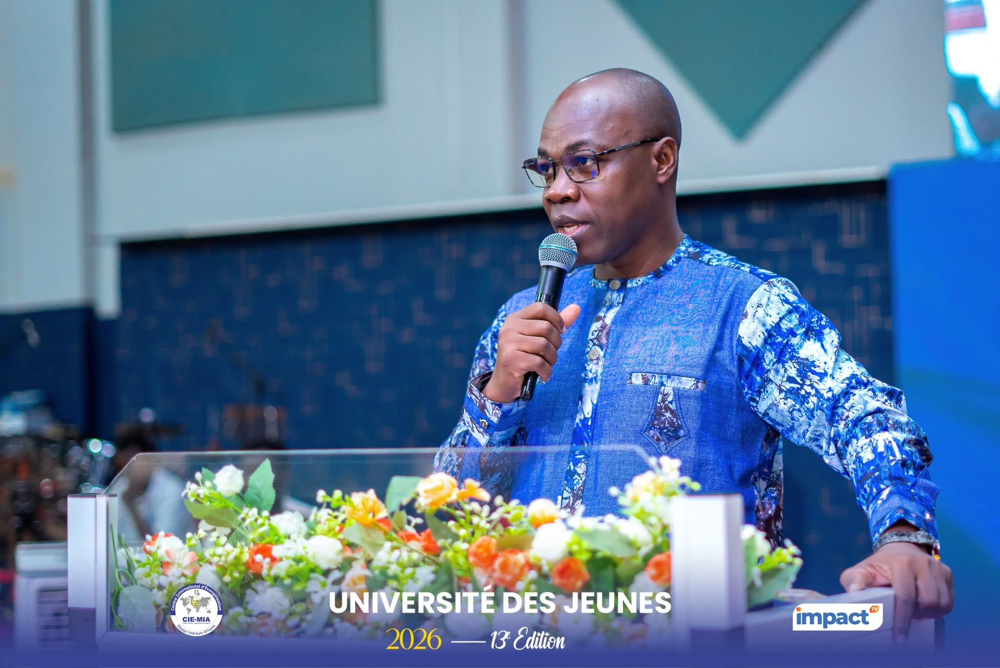
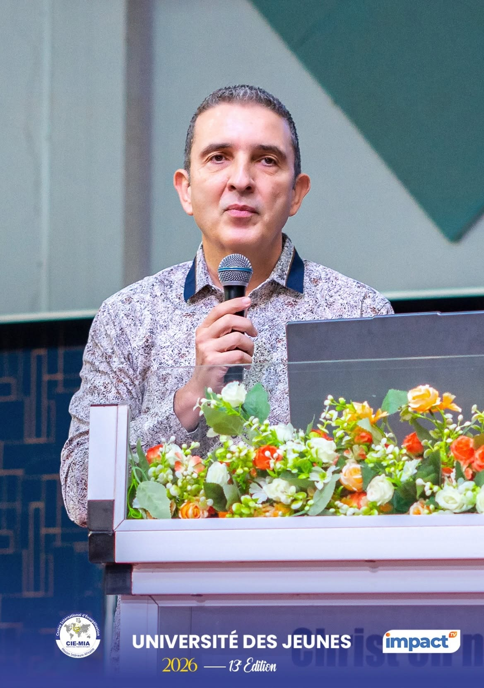

Trois enseignements ont marqué la troisième journée : la loyauté comme fidélité, intégrité et engagement, prêchée par le Pasteur Paul ABOU ; l'art d'investir avec discernement pour bâtir l'avenir du Burkina Faso et de l'Afrique, enseigné par le Pasteur Jean-Daniel GLAUSER ; puis, lors de la session du soir, l'appel du Bishop Fulbert Daniel N'CHO à faire passer la connaissance de son identité en Christ à une vie d'action.

Retour sur les temps forts de cette troisième journée, tels que relayés par les bulletins quotidiens N°002 & N°003 des Universités des Jeunes du CIE/MIA.
Une réflexion sur la rareté de la fidélité et sur ce qui fait d'un jeune quelqu'un sur qui l'on peut compter.
Le premier enseignement de la 3ᵉ journée des Universités des Jeunes 2026 a été donné par le Pasteur Paul ABOU, coordonnateur du département des vases précieux à EDEN/TBI. Il s'est entretenu avec la jeunesse sur « la loyauté dans la vie du jeune chrétien ».
S'appuyant notamment sur Psaumes 12 et Proverbes 20:6, l'orateur a souligné la rareté des personnes véritablement fidèles et dignes de confiance. Il a défini la loyauté comme une combinaison de fidélité, de sincérité, de constance, d'engagement, d'intégrité, de persévérance, de détermination et d'honnêteté.
Cette qualité, a-t-il relevé, est recherchée dans tous les domaines, de l'Église aux entreprises en passant par les organisations gouvernementales ou non. Il a notifié que le véritable problème de nombre de chefs d'entreprises n'était pas le manque de travailleurs, mais la difficulté à trouver des jeunes intègres et fidèles sur qui compter. Pour l'orateur, les diplômes et les compétences ne suffisent pas à garantir la confiance : une personne compétente mais déloyale peut difficilement se voir confier de grandes responsabilités.
« Peut-on compter sur eux dans leur travail, leur Église et les responsabilités qui leur sont confiées ? »Pasteur Paul Abou
Les jeunes ont été invités à se poser cette question. La loyauté doit se manifester particulièrement dans les périodes difficiles et dans les petites tâches quotidiennes. À l'inverse, la déloyauté peut commencer discrètement par des critiques formulées en secret, des comparaisons, des murmures et une influence négative sur les autres ; elle peut ensuite conduire aux divisions et à la rébellion. Le cas d'Absalom, qui a développé une opposition au roi David, son père, a illustré ce développement. L'orateur a également évoqué Coré, Dathan et Abiram comme avertissement contre la contestation de l'autorité spirituelle, tout en distinguant une séparation motivée par une véritable direction de Dieu d'une rupture provoquée par l'orgueil, la jalousie ou l'intérêt personnel.
Plusieurs autres personnages bibliques ont été des modèles de fidélité. Jonathan et David illustrent une loyauté maintenue malgré les menaces. Ruth, de son côté, choisit librement de rester auprès de Naomi et d'embrasser sa foi et son peuple. Jésus-Christ a enfin été présenté comme le modèle suprême de loyauté : Jean 5:19 et Jean 6:38 ont servi à rappeler son engagement à accomplir la volonté de Celui qui l'avait envoyé. La loyauté est alors une décision personnelle qui exige engagement et sacrifice.
Pour clore, l'orateur a appelé les jeunes à faire de la loyauté un véritable style de vie, au service, à la maison et à l'Église. Rester loyal, fidèle et sincère à l'autorité même dans les épreuves, et l'honorer, doit être un engagement.
Psaumes 12 · Proverbes 20:6 · Jean 5:19 · Jean 6:38

Former des leaders responsables, enracinés en Dieu et capables de contribuer au développement du Burkina Faso et de l'Afrique.
Lors de la session matinale du 3ᵉ jour des UJ 2026, le Pasteur Jean-Daniel GLAUSER a entretenu la jeunesse chrétienne sur « Comment investir avec discernement dans des domaines à forts potentiels ? », afin de devenir des leaders responsables, capables de contribuer au développement du Burkina Faso et de l'Afrique.
Fondateur du Lycée privé Martin Luther King, le Pasteur Jean-Daniel Glauser a placé son intervention sous le signe de la formation spirituelle, de l'autonomie et de la gestion responsable des finances. Devant les participants, il a présenté la décennie 2020-2030 comme une période propice au positionnement d'une nouvelle génération appelée à exercer une influence dans l'Église, l'économie et la société.
Le conférencier a encouragé les jeunes à croire en leur potentiel et à se préparer à devenir ingénieurs, médecins, entrepreneurs, scientifiques ou responsables administratifs. Pour lui, le développement du Burkina Faso dépendra notamment de leaders enracinés dans la connaissance de Dieu, dotés d'une vision à long terme et animés par le souci de servir plutôt que par la recherche d'avantages personnels ou individuels.
Arrivé au Burkina Faso dans les années 1995, Jean-Daniel Glauser a expliqué que son regard sur l'Afrique avait changé au contact du pays. Il a dénoncé le découragement et les préjugés qui peuvent freiner les jeunes, ainsi que la tentation de rechercher des raccourcis, des relations ou des gains faciles.
« Un futur leader doit d'abord apprendre à servir. »Pasteur Jean-Daniel Glauser
Il a insisté sur l'importance de l'intégrité, de la loyauté, de l'obéissance et de la persévérance. Une large part de son enseignement a porté sur le rapport des jeunes à l'argent : il a soutenu que l'argent n'est ni bon ni mauvais en soi, mais que son usage révèle les priorités de chacun. Il a mis en garde contre l'endettement excessif, les achats compulsifs, la recherche de richesse rapide et l'influence des réseaux sociaux, qu'il considère comme des facteurs d'instabilité financière et morale.
Il a invité les participants à adopter des pratiques concrètes : travailler, se former continuellement, établir un budget, épargner et investir avec discernement. L'épargne de précaution, selon lui, doit permettre de faire face aux imprévus sans dépendre du crédit. Il a également recommandé de diversifier les investissements et de privilégier les activités productrices de revenus, notamment l'agriculture, l'élevage, l'immobilier, l'entrepreneuriat et les placements de long terme — cela nécessite cependant que la jeunesse se documente avant tout engagement financier, évite les décisions impulsives et comprenne les secteurs économiques ainsi que les risques liés aux placements. Il a aussi souligné qu'un rendement élevé implique nécessairement une part de risque.
La séance s'est achevée par des échanges avec les participants, notamment sur la possibilité d'investir avec de faibles revenus. Cette conférence a été une plateforme de capacitation de la jeunesse chrétienne sur la créativité et l'autonomie financière.
Travailler, se former, établir un budget, épargner, diversifier et investir avec discernement — sans dépendre du crédit ni rechercher les gains faciles.
Un appel à franchir le pas de la simple connaissance de son identité en Christ vers une vie d'action, guidée par la foi et l'amour.
Lors de la 3ᵉ session du soir des UJ 2026, le Bishop Daniel Fulbert N'CHO, orateur principal, a invité les participants à franchir une étape décisive dans leur marche spirituelle : passer de la simple connaissance de leur identité en Christ à une vie d'action, guidée par la foi et l'amour.
En introduisant son enseignement sur l'identité du croyant, l'orateur a rappelé que la nouvelle naissance constitue le fondement de la vie chrétienne. S'appuyant sur l'Évangile de Jean 3:3-6, il a souligné que toute personne née de nouveau appartient désormais au Royaume de Dieu et bénéficie d'une nouvelle identité spirituelle — une transformation qui n'est pas seulement symbolique, mais qui marque un véritable changement d'appartenance. Citant l'épître aux Colossiens 1:12-13, l'homme de Dieu a rappelé que Dieu a délivré les croyants de la puissance des ténèbres pour les faire entrer dans le Royaume de son Fils Jésus.
« Connaître son identité est important, mais cette connaissance doit se traduire par des actes. »Bishop Fulbert Daniel N'Cho
La fermeté du croyant, selon le Bishop, repose sur deux piliers essentiels : la foi en Jésus-Christ et l'amour envers Dieu et envers les autres. En s'appuyant sur Éphésiens 1:15-19, il a montré que ces deux vertus ouvrent la voie à une compréhension plus profonde des réalités spirituelles : la foi permet au chrétien de demeurer attaché aux promesses de Dieu, tandis que l'amour favorise la communion fraternelle et le pardon. L'orateur a particulièrement insisté sur la nécessité de développer un cœur capable de pardonner, car l'amour authentique ne se limite pas aux paroles, mais se manifeste dans les attitudes et les relations quotidiennes.
La première manifestation de cette fermeté doit se voir dans la relation personnelle avec Dieu. En tant qu'enfants de Dieu, les croyants ont désormais le privilège de s'approcher librement du Seigneur. En se basant sur Hébreux 4:16, Bishop Daniel Fulbert N'CHO a encouragé les jeunes à développer une vie de prière plus intense et plus régulière : le chrétien n'a pas à vivre dans la peur ou dans le doute, mais dans l'assurance que lui confère son statut d'enfant de Dieu.
Au-delà de la prière, la fermeté chrétienne doit également se refléter dans le comportement quotidien. Citant Éphésiens 5:8, le Bishop a rappelé que les jeunes chrétiens doivent marcher comme des enfants de lumière. Dans cette perspective, il a présenté le jeune Daniel comme un modèle de fidélité et d'intégrité : malgré les pressions de son environnement, Daniel avait pris la résolution de ne pas se souiller avec des pratiques contraires à sa foi (Daniel 1:8).
L'enseignement s'est également orienté vers la responsabilité missionnaire des participants. Revenant sur les paroles de Jésus dans Matthieu 9:37-38, l'orateur a rappelé que la moisson est abondante mais que les ouvriers demeurent peu nombreux, exhortant les jeunes à s'engager activement dans l'évangélisation et le service de Dieu, car la foi authentique ne peut rester passive.
Au terme de son intervention, le Bishop Daniel Fulbert N'CHO a lancé un appel à l'engagement et à la détermination spirituelle, invitant les jeunes à rejeter toute forme de compromis, à affirmer leur identité en Christ et à agir avec courage dans leur génération.
Jean 3:3-6 · Colossiens 1:12-13 · Éphésiens 1:15-19 · Hébreux 4:16 · Éphésiens 5:8 · Daniel 1:8 · Matthieu 9:37-38